详解 LLM 与 RAG 的数据处理机制 —— 从 token 编号、词表大小，到 embedding 的维度、实现与对比学习
整期视频只回答三个问题
核心一句话：Tokenizer 负责把文字变成数字，Embedding 负责把数字变成"能表达语义关系的向量"。前者是预处理，后者是模型的一部分。
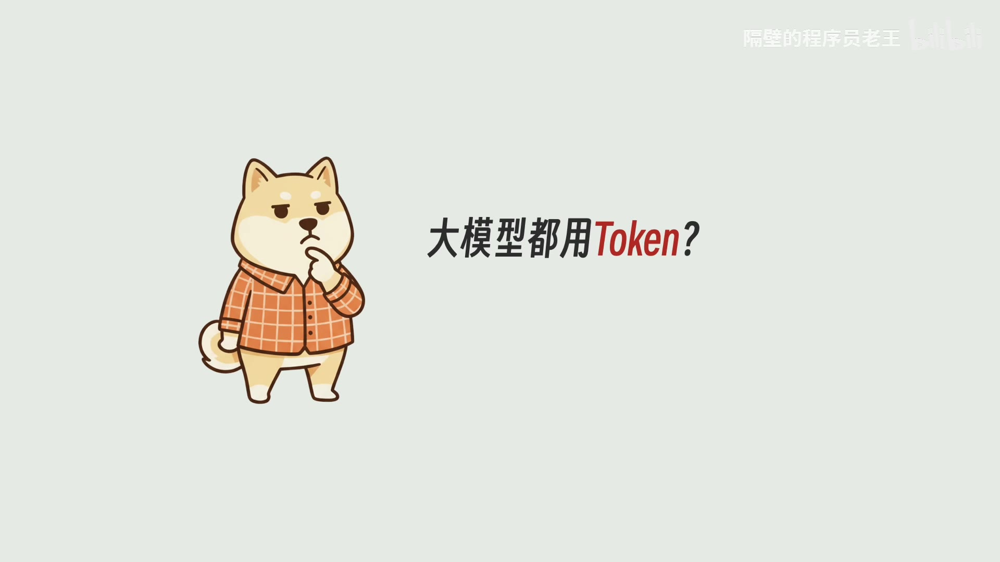
六个章节，一条从"编号"到"语义"的推演链
Token 就是一个一个代表字词的编号
和大模型聊天的时候，我们都是直接输入文字的。但实际上现在基本所有的 LLM，都要先通过一个叫做 Tokenizer 的东西，把文字转化成 token。
所谓 token，其实就是一个一个代表字词的编号。那为什么要进行这一步呢？直接处理文字不好吗？
Apple，计算机存储的并不是 "Apple" 这个词，而是 A、p、p、l、e 五个离散的字母。如果用离散的字母来训练模型，那就先要求模型从这五个字母中识别出"它是苹果"，然后再用"苹果"这个概念进行下一步处理。
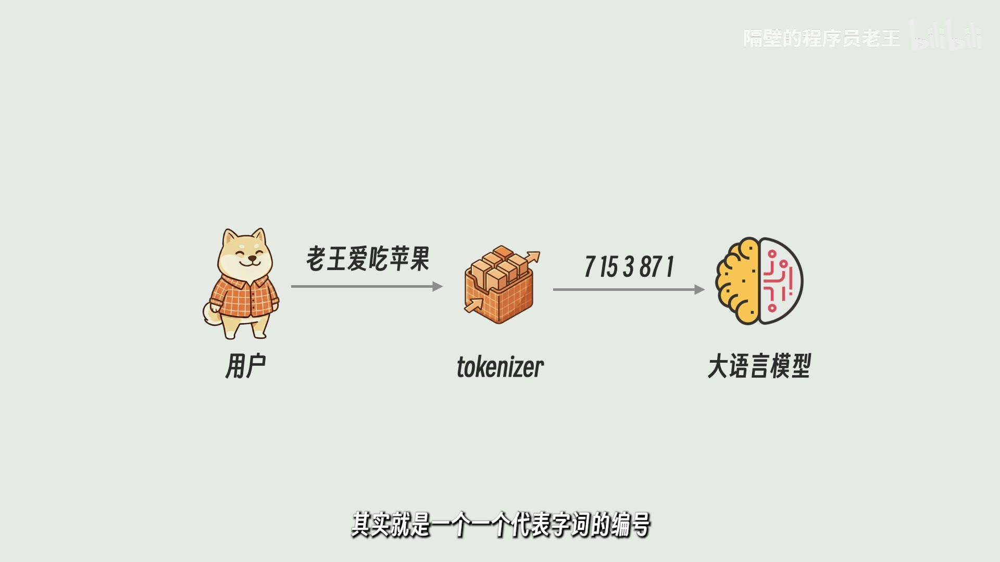
所以人们就给大模型做了一个词表（词典），用数字来代表单词。比如数字 1 代表 Apple，数字 2 代表 Banana，数字 3 代表 Pear。而 1、2、3 这些数字，就是所谓的 token。
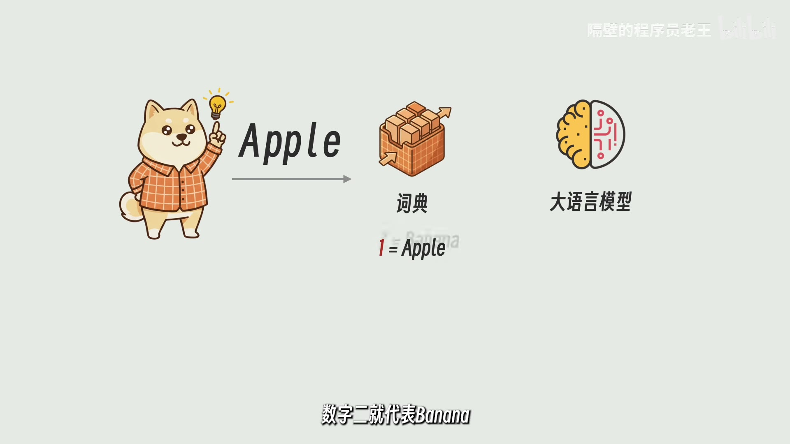
当然，token 和单词也不是一一严格对应的。有时候一个单词可能会被拆分成多个 token。
比如说 oldest 这个单词，就可能被拆分成一个代表 old 的 token，和一个代表最高级 est 的 token。这样做的好处是，可以帮助大模型认识一些没有见过的词。
Goodest 这个词本身是不存在的，但是却可以被拆解成 good 和 est，大模型也就理解了。
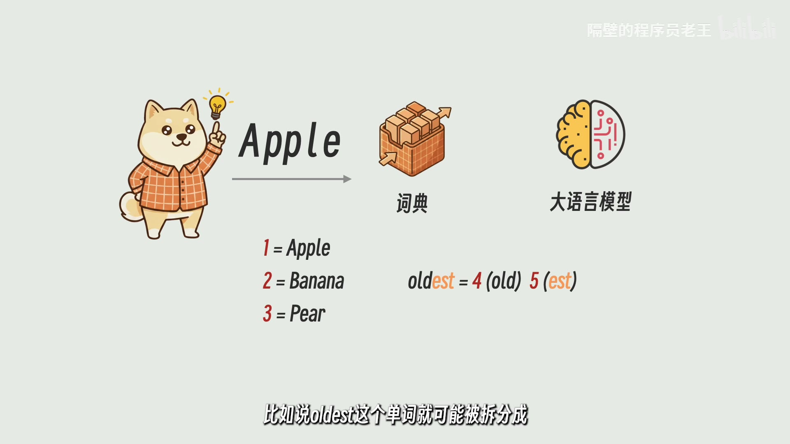
这样一来，大模型处理的就不是单独的字母了，而是 1、2、3 这些代表某些单词或者单词片段的数字，于是效率就高多了。
而这些把文字转化成数字、又把数字转化回文字的程序，就叫做 Tokenizer。
现在比较常见的 Tokenizer 库，有 OpenAI 的 tiktoken 和谷歌的 WordPiece 等等。这些 Tokenizer 的内部实现原理不尽相同：
| Tokenizer | 使用算法 | 共同功能 |
|---|---|---|
| tiktoken（OpenAI） | BPE | 把字词转化成数字 |
| WordPiece（Google） | WordPiece |
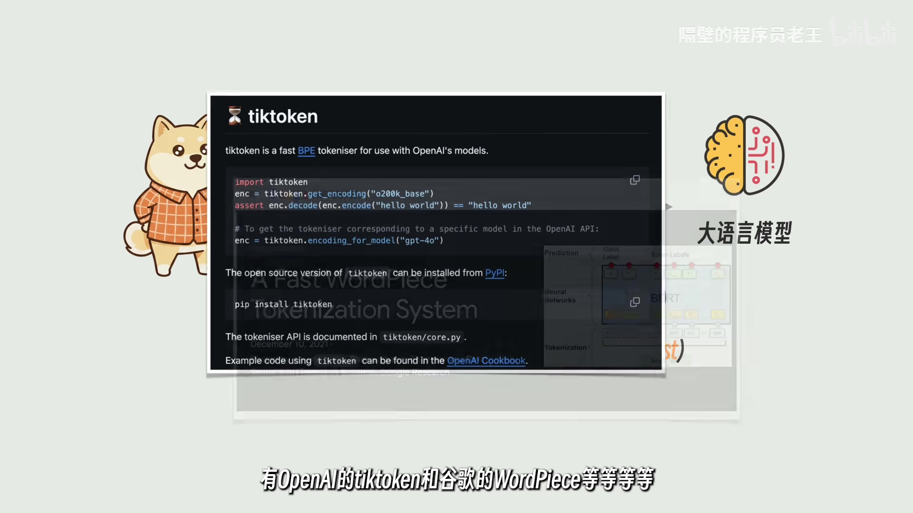
一个 Tokenizer 认识的所有 token 数量，叫做词表大小 Vocab Size。
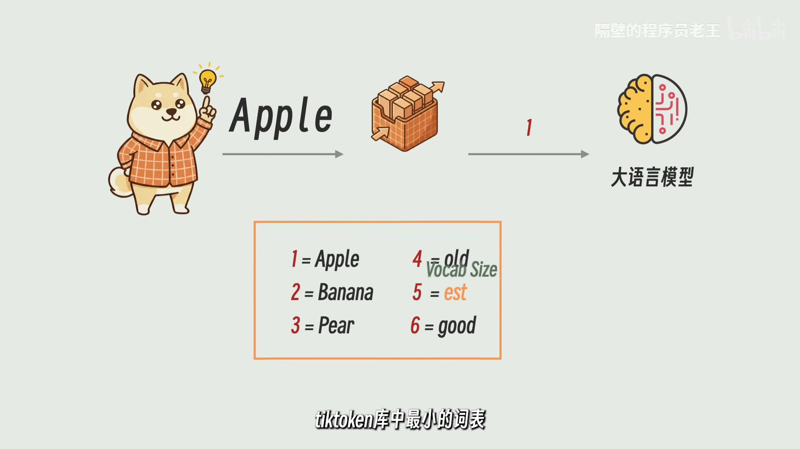
而对中文支持更好的 GPT-4o，不仅模型本身变大了，它的 tiktoken 词表也增大到了 20 万（o200k_base），基本覆盖了所有的中文单词，从根本上增加了中文的处理效率。
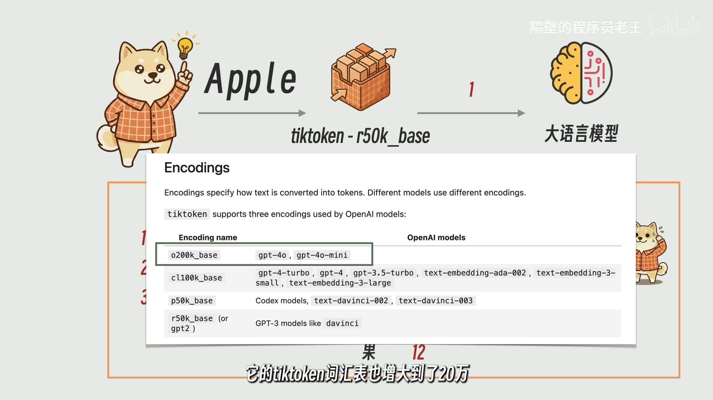
大模型是一个连续函数，但这个特性还没被用起来
现在我们有了 Tokenizer，就可以把任何文字转化成数字，并放入大模型进行计算了。而大模型本身，则可以近似地被看成一个超级复杂的连续函数：token 就是函数的输入，而函数的输出也就是大模型的回复。
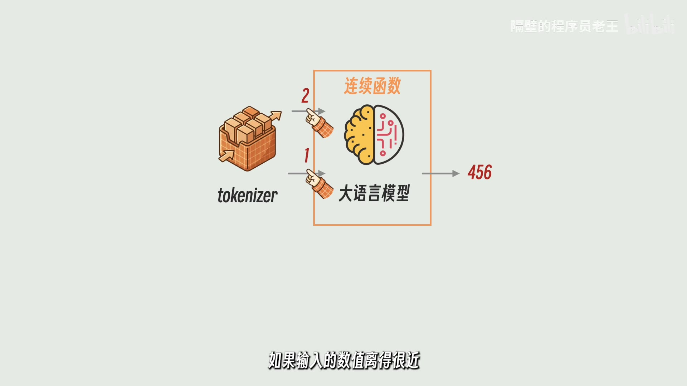
比如说：
它们都是同一个意思，所以我们希望模型输出的内容应该也是差不多的。
"老王爱吃"都是相同的文字，所以 token 肯定也是相同的。那么如果说 苹果 / Apple / りんご 对应的 token 本身也很相近的话，根据函数的连续性，模型天生就会输出比较相似的内容。如果我们能够利用这个特点，在训练的时候就可以省下不少的算力。
但是 token 本身只是一个数字，也就是一个维度。我们在设计 Tokenizer 的时候，当然可以让 苹果 / Apple / りんご 对应的 token 离得比较近。
那香蕉呢？
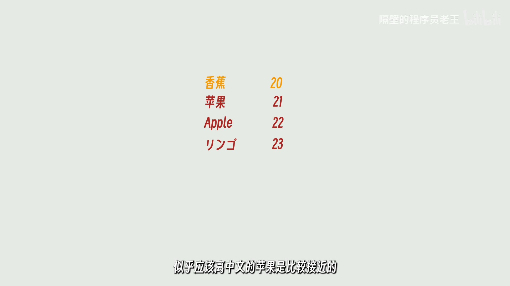
既然一个数不行，我们就多用几个数
那么解决方法是什么呢？既然一个数不行，我们就多用几个数呗。
于是人们也不管 token 到底是多少了，他们把 token 又做了一次转化，变成了一个多维的向量。向量中的每个数字都代表了 token 的某些特征：
| 第 1 个数 | 第 2 个数 | 第 3 个数 | 第 4 个数 | … |
|---|---|---|---|---|
| 语言 | 形状 | 颜色 | 类别 | … |
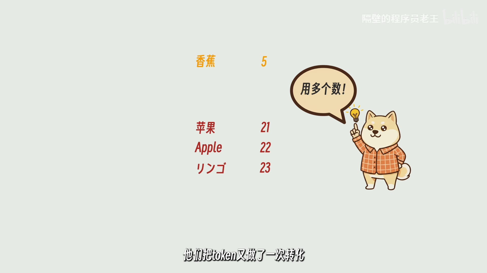
于是：
| 词 | 语言 | 形状 | 颜色 | 类别 |
|---|---|---|---|---|
| 苹果 | 1（中文） | 1（圆） | 1（红） | 1（水果） |
| りんご | 2（日文） | 1 | 1 | 1 |
| Apple | 3（英文） | 1 | 1 | 1 |
| 香蕉 | 1（中文） | 2（长） | 2（黄） | 1（水果） |
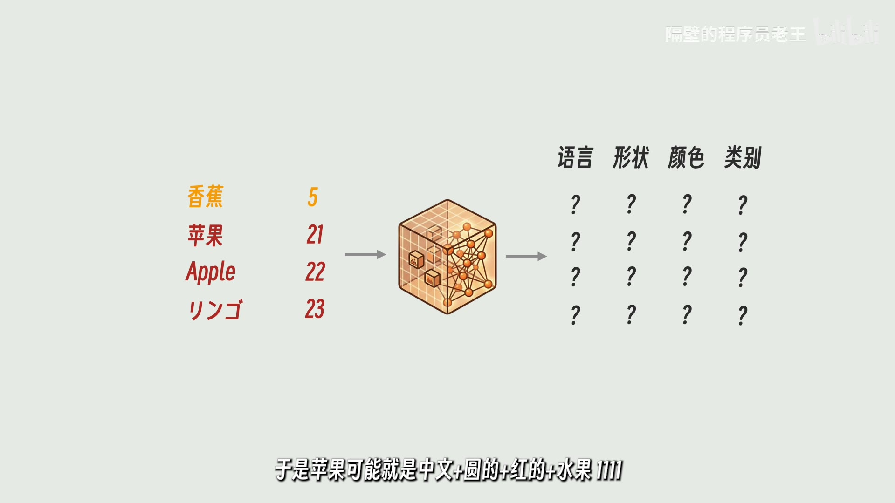
这样一来，我们就可以很容易地表达出 香蕉 / 苹果 / Apple 这些既近又远的关系了。
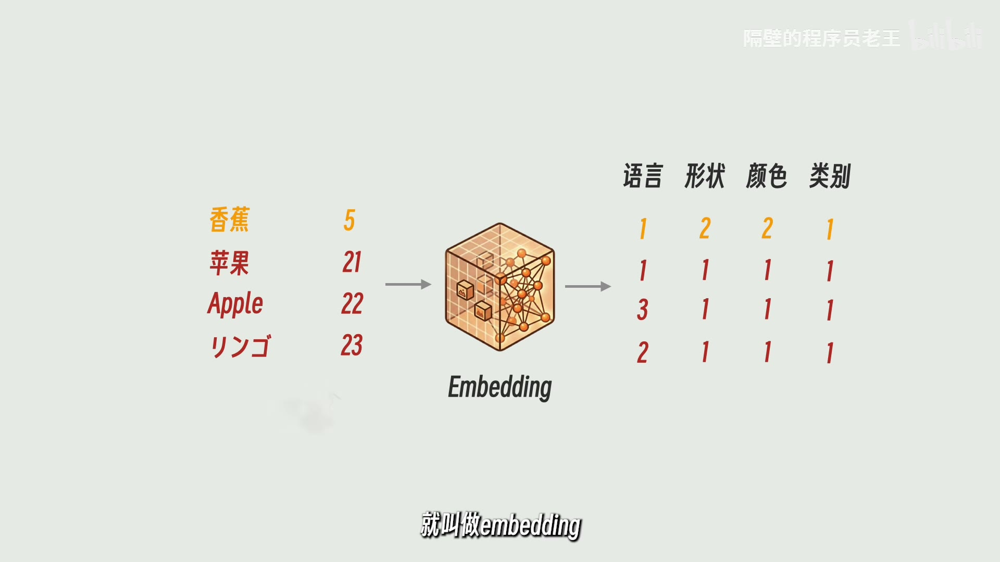
实际模型中的 embedding 维度远不止 4 个：
| 模型 | Embedding 维度 |
|---|---|
| GPT-2 XL | 1600 个数字 |
| DeepSeek R1 | 7168 个数字 |
| Gemini 3 / GPT-5 | 未公布，猜测已经上万 |
d_model 或者 n_embd。
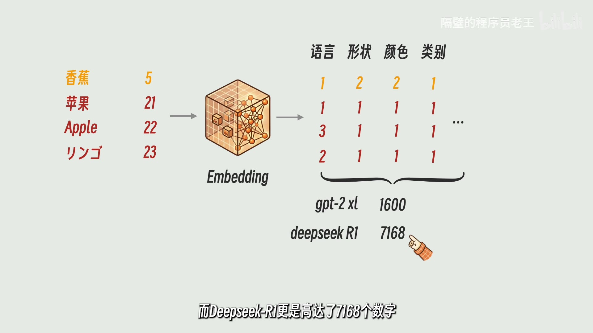
所以：Tokenizer 是把用户文字转化成数字（token），而 Embedding 是把 token 转化成向量。这两个东西的功能虽然看起来比较相似，但它们有一个本质上的不同。
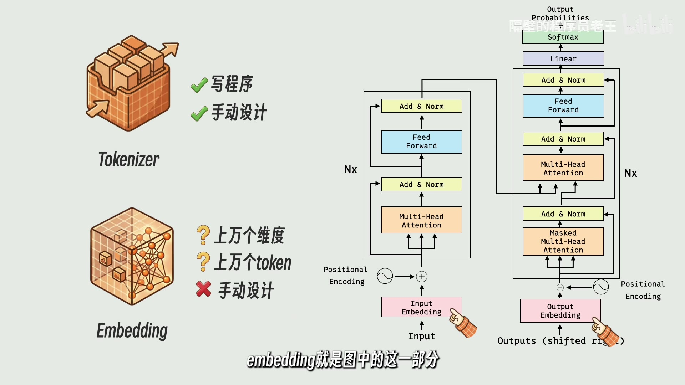
那么既然 embedding 是训练出来的，embedding 向量中每个数字代表的意义，也就不是人工设计的了。
我想，这也是 AI 的魅力之一吧。
One-Hot 编码 + 一层最普通的 Linear
这里我们假设词表大小 Vocab Size 是 50257，而 embedding 的维度是 1600。
那我们就先把每一个 token 都写成一个长度是 50257 的向量：向量中几乎所有的数字都是 0，只有 token 对应的那个数字是 1。这种编码的方式叫做 One-Hot 编码。于是 token 本身就变成了一个向量。
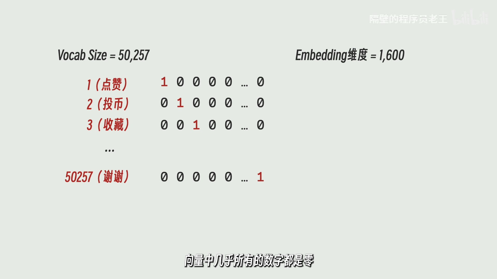
而 embedding 的实现，就是一个最最普通的线性变换层 Linear：
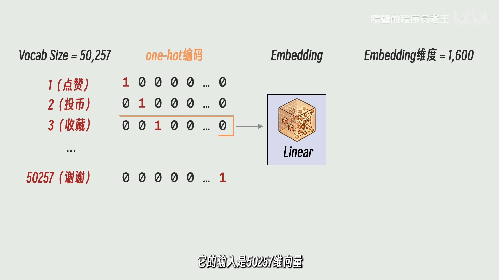
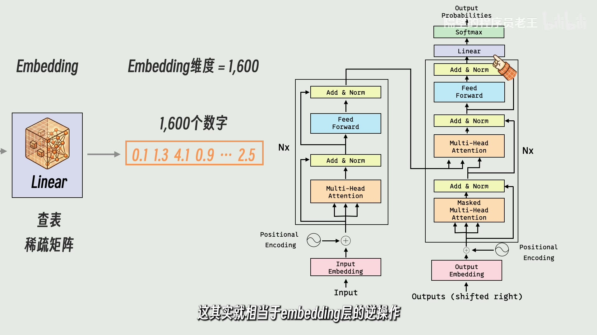
最后一个问题：embedding 之后，原本是一个数字的 token 变成了 1600 个数字的向量 —— 模型自己理解起来是方便了，但是人类却理解不了了。
所以大多数大模型在最后，会增加另外一个线性层，这其实就相当于 embedding 层的逆操作：
就是我们刚刚介绍的 token embedding，处在模型最下边的位置。
Transformer 中间这一大坨东西，处理的都是 embedding 本身，最后输出的还是 embedding。
最后的这个线性层，把输出的 embedding 转化回人类方便理解的 token。
不一样，但又有关系
对 RAG 比较了解的朋友听到这里可能就要急了："老王老王，你说的这些都不对 —— 我学过 RAG，RAG 里的 embedding 明明是把一整段话转化成一个向量，不是像你这样一个 token 一个 token 转化的。"
没错，说得没错。RAG 的 embedding 和大语言模型的 embedding 确实是不一样的：
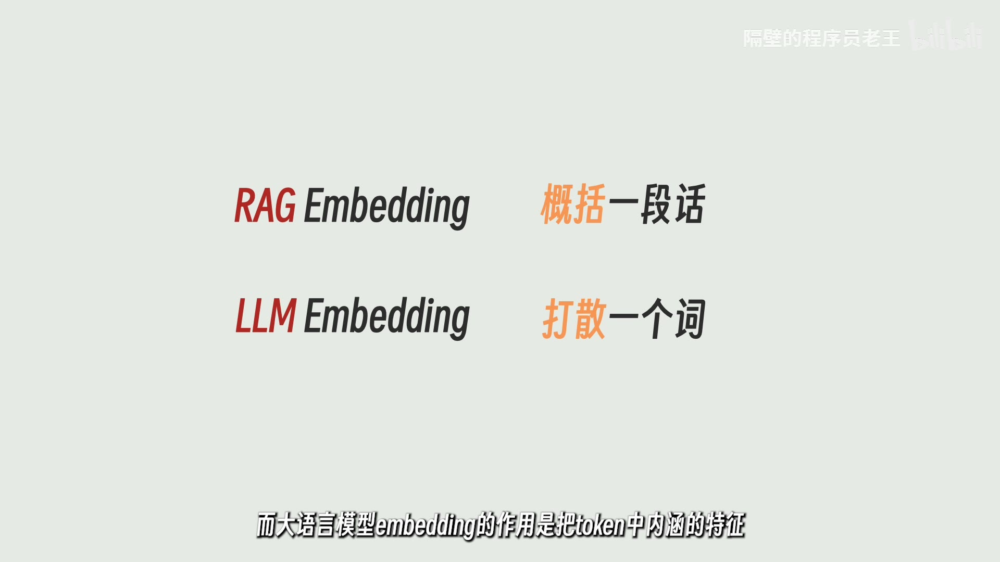
但是它们二者之间其实又是有关系的。你还记得 Transformer 模型的最后一步做的是什么吗？
通过一个线性层，把模型输出的 embedding 转化回方便人类理解的 token。而这个没有经过转化的、模型输出的 embedding，它基本就是 RAG 的 embedding 了。
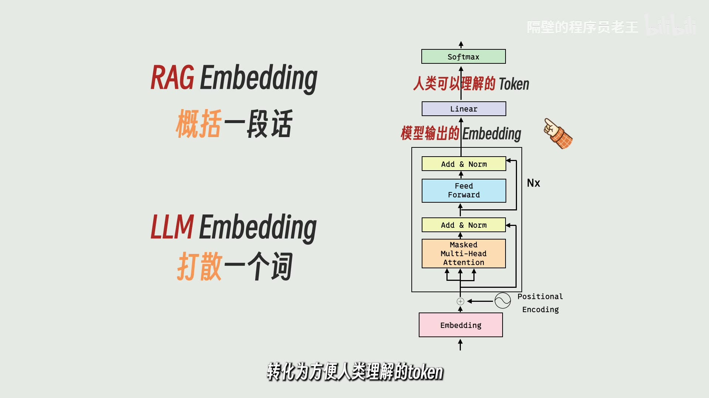
当然了，最后大语言模型会把 embedding 转化回 token 一样，RAG embedding 的模型最后一般也还会做一些后续的处理，比如说池化（Pooling）什么的。
还有一点小区别：和大语言模型不同，RAG 的 Transformer 结构一般不会进行 mask，也就是所谓的 encoder-only 架构，或者是 BERT 模型。
| 对比项 | LLM 模型 | RAG 模型 |
|---|---|---|
| Attention | Masked Multi-Head Attention | Multi-Head Attention（无 mask） |
| 架构类型 | decoder-only | encoder-only（BERT 类） |
| 顶部结构 | Linear → Softmax | Pooling |
| 输出目标 | 下一个 token | 一个概括大意的向量 |
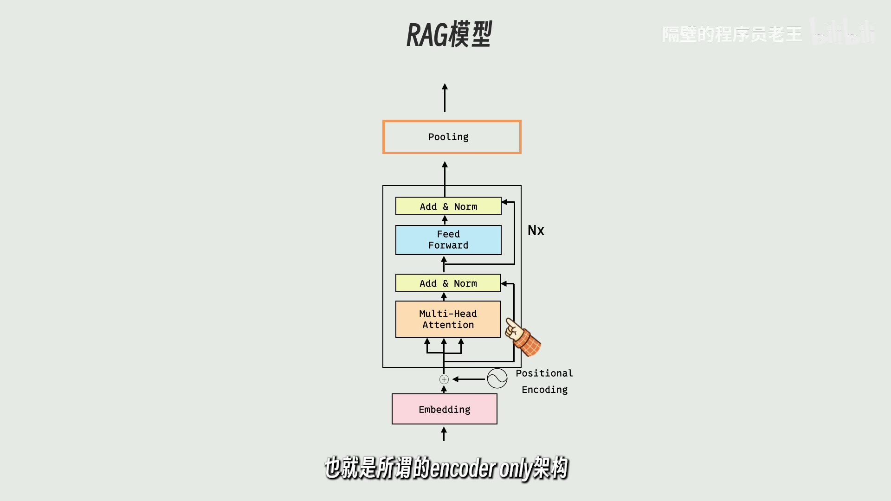
当然了，上面其实都是一些小修小补。它们二者最大的不同来自于训练方式的不同。
在训练大语言模型的时候，我们期望的输出是文字接龙游戏中的下一个 token。所以在训练的时候，我们提供的是文字接龙的素材：
输入：老王 → 训练模型输出：爱 输入：老王爱 → 训练模型输出：吃 输入：老王爱吃 → 训练模型输出：苹果
而在训练 RAG embedding 的时候，我们的目的就不是文字接龙了，而是概括文字的含义。所以训练的素材就变成了一对一对的文本片段。
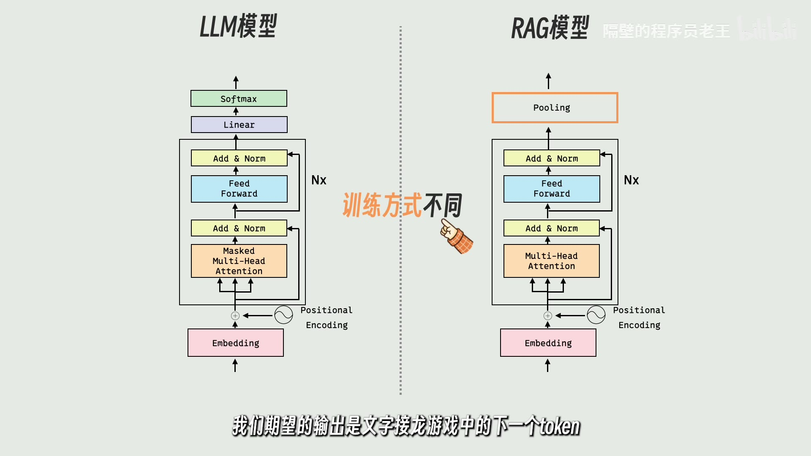
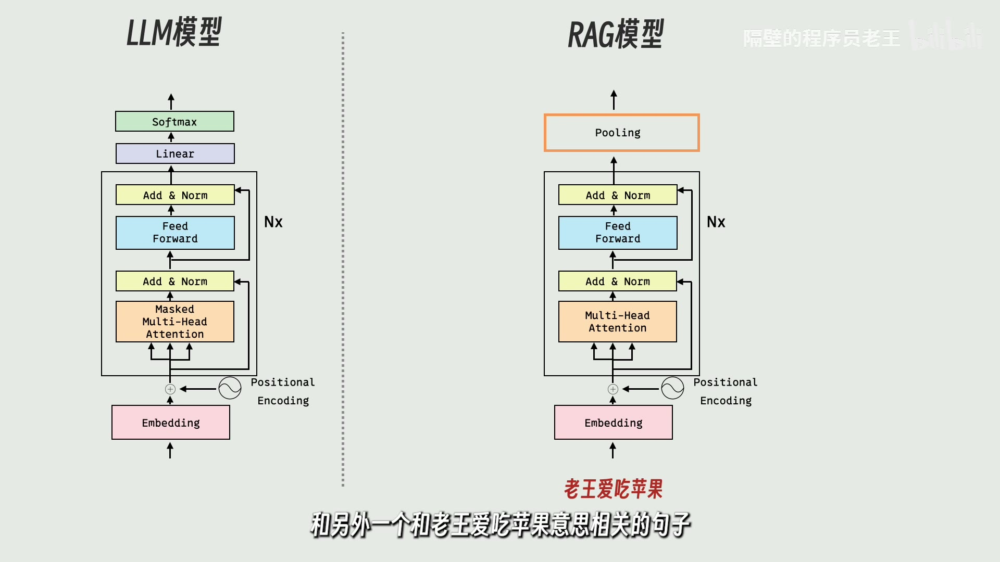
假如我想训练"老王爱吃苹果"的 embedding，我们就应该输入"老王爱吃苹果"本身，和另外一个和它意思相关的句子，比如说"小王爱吃香蕉"。
由于这两个句子都是描述"某人爱吃什么"的片段，所以我们在训练的时候，就应该让模型输出的 embedding 差距足够小。在这里，"小王爱吃香蕉"也被叫做正样本。
而如果输入变成了"老王爱吃苹果"和"老李找到了女朋友" —— 考虑到老王既不是老李，老王也不可能找到女朋友，所以这两个文字可以说是毫无关联。所以我们在训练的时候，就应该让模型输出的 embedding 差距足够大。在这里，"老李找到了女朋友"也被叫做负样本。
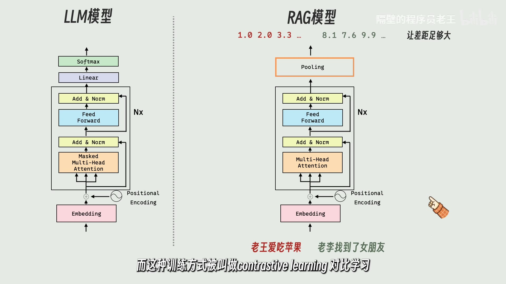
视频最后 1 分钟的升华
这正像我们每个人的底层架构其实都是一样的，但正因为不同的经历：
这些截然不同的人生轨迹，训练出了世界上独一无二的我们。如果你坚持看到了这里，那大概我们的训练都挺好的。
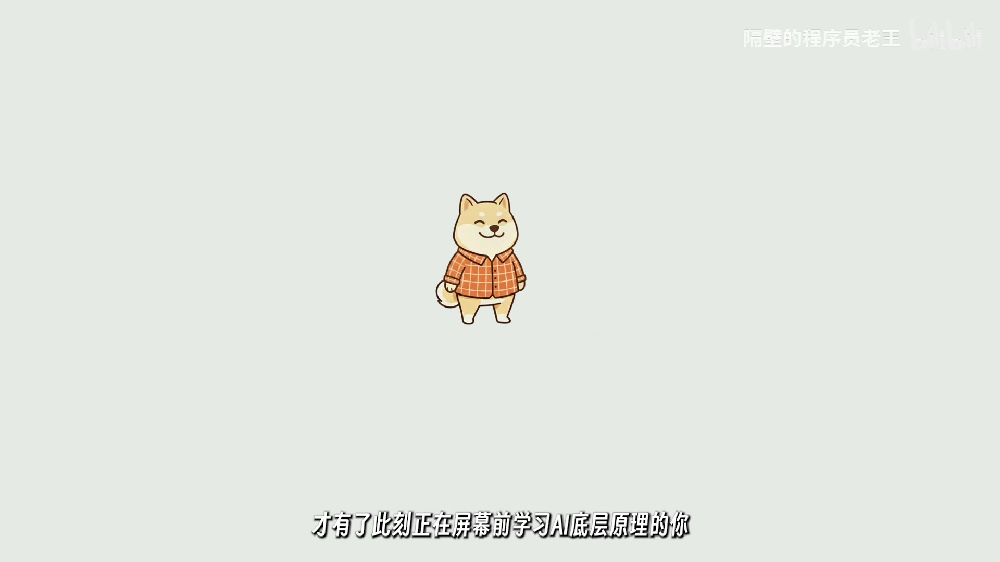
把整期视频压缩成一张表
| 问题 | 结论 |
|---|---|
| 大模型为什么处理 token 而不是文字？ | 计算机里文字是离散字符，直接处理效率太低；用编号代表词/词片段更高效 |
| token 和单词一一对应吗？ | 不。一个词可能被拆成多个 token（oldest → old + est），好处是能处理没见过的词 |
| 什么决定中文处理效率？ | 词表大小 Vocab Size。GPT-2 只有 50257，GPT-4o 的 o200k_base 有 20 万 |
| Tokenizer 属于模型的一部分吗？ | 不属于。它是数据预处理，训练时固定不变 |
| 为什么一个 token 编号不够？ | 一维数字无法表达"既近又远"的关系（香蕉 vs 苹果 vs Apple） |
| Embedding 是什么？ | 把 token 转化成一串数字（多维向量），每个维度代表某些特征 |
| Embedding 可以手工设计吗？ | 不行。几千几万个维度必须训练出来，它是大模型的一部分 |
| Embedding 怎么实现的？ | token → One-Hot（50257 维）→ Linear → embedding（1600 维） |
| 模型最后那个 Linear 干什么？ | Embedding 层的逆操作，把向量转回人类可读的 token |
| RAG embedding 与 LLM embedding 的区别？ | RAG：一整段话 → 概括大意的向量；LLM：单个 token → 打散特征的向量 |
| 二者的联系？ | 模型最顶部"未经过 Linear 转化"的输出 embedding，基本就是 RAG embedding |
| 训练方式差异？ | LLM 是文字接龙（预测下一个 token）；RAG 是对比学习（正样本拉近、负样本推远） |
| 架构差异？ | RAG 一般不做 mask，是 encoder-only（BERT 类）；LLM 是 masked / decoder-only |
视频中的关键概念
| 术语 | 解释 |
|---|---|
| Token | 代表字词或字词片段的编号，是大模型的输入单位 |
| Tokenizer | 把文字转成 token、把 token 转回文字的程序；属于数据预处理，不是模型的一部分 |
| 词表大小（Vocab Size） | 一个 Tokenizer 认识的所有 token 数量，如 GPT-2 的 50257、GPT-4o 的 20 万 |
| BPE | tiktoken 使用的分词算法 |
| WordPiece | Google 的分词算法，也是其 Tokenizer 库的名字 |
| Embedding | 把 token 转化成一串数字（多维向量）的过程；在大模型中指 Input Embedding 层 |
| d_model / n_embd | Embedding 的维度，即向量中数字的个数，如 GPT-2 XL 的 1600、DeepSeek R1 的 7168 |
| One-Hot 编码 | 长度为词表大小、只有对应位置为 1 的向量，是 embedding 的输入形式 |
| Linear（线性层） | 最普通的神经网络基本结构；embedding 的实现就是把 One-Hot 向量过一层 Linear |
| Pooling（池化） | RAG embedding 模型顶部的后处理，把序列向量汇总成一个段落向量 |
| Encoder-only / BERT | 不做 mask 的 Transformer 结构，RAG embedding 模型通常采用 |
| 正样本 / 负样本 | 对比学习中语义相关的文本对（拉近）与无关的文本对（推远） |
| Contrastive Learning | 对比学习：通过拉近正样本、推远负样本来训练 embedding 的方法 |
| RAG | 检索增强生成；其 embedding 用于把整段文本压成一个可用于检索的语义向量 |